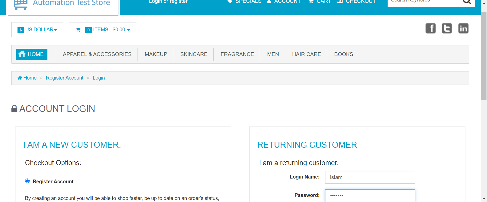

-
Login Functionality
12:44:06 AM / 00:00:19:778 Fail
Login Functionality
06.15.2024 12:44:06 AM 06.15.2024 12:44:26 AM 00:00:19:778 · #test-id=1FailUser logs in with invalid credentialsFailUser logs in with invalid credentialsGiven the user is on the main page of the website and get the Title of the pageThen The user will click on AccountWhen The user will write invalid username "islam" and password "ibrahim"Then The user will click sign buttonStepDefinitions.hooks.takeScreenshot(io.cucumber.java.Scenario)ScreenshotWhen the browser is gonna closeStep skippedFailUser logs in with invalid credentialsGiven the user is on the main page of the website and get the Title of the pageThen The user will click on AccountWhen The user will write invalid username "user1" and password "password1"Then The user will click sign buttonStepDefinitions.hooks.takeScreenshot(io.cucumber.java.Scenario)ScreenshotWhen the browser is gonna closeStep skipped -
Login Functionality
12:44:06 AM / 00:00:16:635 Fail
Login Functionality
06.15.2024 12:44:06 AM 06.15.2024 12:44:23 AM 00:00:16:635 · #test-id=4FailUser logs in with invalid credentialsFailUser logs in with invalid credentialsGiven the user is on the main page of the website and get the Title of the pageThen The user will click on AccountWhen The user will write invalid username "user1" and password "password1"Then The user will click sign buttonStepDefinitions.hooks.takeScreenshot(io.cucumber.java.Scenario)Screenshot When the browser is gonna closeStep skippedFailUser logs in with invalid credentialsGiven the user is on the main page of the website and get the Title of the pageThen The user will click on AccountWhen The user will write invalid username "islam" and password "ibrahim"Then The user will click sign buttonStepDefinitions.hooks.takeScreenshot(io.cucumber.java.Scenario)ScreenshotWhen the browser is gonna closeStep skipped
When the browser is gonna closeStep skippedFailUser logs in with invalid credentialsGiven the user is on the main page of the website and get the Title of the pageThen The user will click on AccountWhen The user will write invalid username "islam" and password "ibrahim"Then The user will click sign buttonStepDefinitions.hooks.takeScreenshot(io.cucumber.java.Scenario)ScreenshotWhen the browser is gonna closeStep skipped -
Login Functionality
12:44:06 AM / 00:00:17:903 Fail
Login Functionality
06.15.2024 12:44:06 AM 06.15.2024 12:44:24 AM 00:00:17:903 · #test-id=8FailUser logs in with invalid credentialsFailUser logs in with invalid credentialsGiven the user is on the main page of the website and get the Title of the pageThen The user will click on AccountWhen The user will write invalid username "islam" and password "ibrahim"Then The user will click sign buttonStepDefinitions.hooks.takeScreenshot(io.cucumber.java.Scenario)ScreenshotWhen the browser is gonna closeStep skippedFailUser logs in with invalid credentialsGiven the user is on the main page of the website and get the Title of the pageThen The user will click on AccountWhen The user will write invalid username "user1" and password "password1"Then The user will click sign buttonStepDefinitions.hooks.takeScreenshot(io.cucumber.java.Scenario)ScreenshotWhen the browser is gonna closeStep skipped
-
org.openqa.selenium.NoSuchElementException
6 tests
org.openqa.selenium.NoSuchElementException
6 failedStatus Timestamp TestName Fail 00:44:20 AM Then The user will click sign button Login Functionality.User logs in with invalid credentials.Then The user will click sign buttonFail 00:44:21 AM Then The user will click sign button Login Functionality.User logs in with invalid credentials.Then The user will click sign buttonFail 00:44:21 AM Then The user will click sign button Login Functionality.User logs in with invalid credentials.Then The user will click sign buttonFail 00:44:21 AM Then The user will click sign button Login Functionality.User logs in with invalid credentials.Then The user will click sign buttonFail 00:44:24 AM Then The user will click sign button Login Functionality.User logs in with invalid credentials.Then The user will click sign buttonFail 00:44:26 AM Then The user will click sign button Login Functionality.User logs in with invalid credentials.Then The user will click sign button
Started
Jun 15, 2024 12:44:06 AM
Ended
Jun 15, 2024 12:44:26 AM
Features Passed
0
Features Failed
3
Features
Scenarios
Steps
Timeline